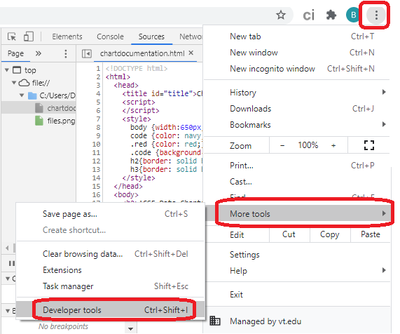

The attached library of code has been built using the Chart.js API. Although anyone can learn to work with the Chart.js code, these libraries have abstracted so the beginning student can use the libary more easily. This HTML page will explain all the basic features.
The charting tools are meant to:
The chart code is a combination of HTML (Hyper Text Markup Language) and JavaScript. These languages are essential to any web-based program. You won't have to learn HTML or JavaScript, but you will need to use a template of code as a starting point. You will also need to add a few lines that are specific to the data and the kind of chart you want to create.
<!DOCTYPE html>
<html>
<head>
<title id="::page title::"></title>
<script src="https://www.chartjs.org/dist/2.9.3/Chart.min.js"></script>
<script src="https://www.chartjs.org/samples/latest/utils.js"></script>
<script src="::JavaScript chart file::"></script>
<script src="::JavaScript data file::"></script>
<script>
function loadData()
{
var chart = createChart(::canvas identifier::, ::width::, ::height::, ::config identifier::);
::create chart::
::setup chart from data file::
chart.update();
}
</script>
</head>
<body onload="loadData()">
<canvas id="::canvas identifier::"></canvas>
</body>
</html>
Each of these red items in the template need to be updated according to this list.
Chart data as a default. Your teacher may ask you to use a standard for each assignment like Greg Smith - Math HW Oct 12. Otherwise, you are free to use any title you like.var configA = createConfig(myType, chartTitle,XLabel,YLabel);//for line chartsvar configB = createConfig(chartTitle,XLabel,YLabel);//for scatter chartsvar configC = createConfig(chartTitle);//for pie charts
All charts will start with the template code. To create your chart, you can copy this code template directly and paste into notepad. In notepad, click File > Save As.... In the Save As window use the Save as type drop down to select All Files. After that you can select a location and a file name for your chart, but be sure to add .html as the file type. For example, you might save it as "stateprojectdata.html".
Once the HTML file has been created, you can double click on the file and it will open in your browser like a web page. It is normal for an HTML file to be opened in a browser by default, but you can also open it with a text editor like notepad. If you want to edit the file, first open notepad and then click File > Open. Select the HTML you created and it will appear in notepad as plain text. WARNING if you change the default program to open HTML files, you may need to correct that setting. Right click on the HTML file and select Open with > Choose another app. In the new window, select your browser of choice (e.g. Chrome). Make sure to check Always use this app to open .html files and hit OK. This should change the default program.
In programming, identifiers are used to give a name to parts of the program. In the code, they look like plain text, but the computer recognizes each identifier like an address on a letter. Just like the address on your mail or email, if you get even one letter wrong, the mail won't go to the right place. Computers are very specific about capitalization and the order of the letters, so you may create errors if you don't EXACTLY match the identifier is all places. If you create an identifier, like configA below, then you are free to give that part of the program whatever name you want. There are rules to follow, but as long as you use upper and lower case letters (no spaces or special characters) you should be safe. If someone else already created the identifer, like createConfig below, you must use the identifier without change. The createConfig identifier was defined in linechartlibrary.js.
var configA = createConfig(myType, chartTitle, XLabel, YLabel);
In programming, functions are small sections of code that can be executed to do a specific job. Functions can have parameters that are used to do that job. There are several functions and parameters in the chart libraries. Let's look at one example. In the code below, createConfig is the function identifier. This function is found in linechartlibrary.js. The function has four parameters; XLabel is one of the four. The function uses this parameter to put the x axis label on the chart.
var configA = createConfig(myType, chartTitle, XLabel, YLabel);
There are nine different kinds of charts that are available in the various libraries. Below are details for setting up the charts. Many of the parameters used in setting up the chart can come directly from the JavaScript data file.
The line chart uses linechartlibrary.js. The line chart starts with the configuration that requires a specific chart type. These chart types must EXACTLY
var config = createConfig(LINE_TYPE, chartTitle,XLabel,YLabel);
The line chart requires a set of labels for the independent axis, which is usually the x axis. These labels can be words like "Red", "Boys", or "Classroom 5". The labels can be numbers representing things like age, distance, or size. These labels are required. The seChartLabels function also requires the configuration identifier as a parameter.
setChartLabels(config, XData);
The line chart allows one or more lines to be added to the chart. Each of the lines requires you to use the createDataSet function. The function requires the configuration identifier as a parameter. Each series must have a title that identifies the data ex. "Grade 4". Each series must have a set of data for the line. This data will appear on the y axis. The chart type is required again as a parameter and must match the chart type used to create the config.
createDataSet(config, seriesTitle1, YData1, LINE_TYPE);
The area chart uses linechartlibrary.js and is setup exactly like the Line chart. The only difference is that the chart type is AREA_TYPE.
The vertical bar chart (sometimes called a column chart) uses linechartlibrary.js and is setup exactly like the Line chart. The only difference is that the chart type is VBAR_TYPE. Unlike the line and area charts, when you add multiple datasets to a bar chart, they will appear next to each other. This view allows you to directly compare the data from multiple datasets.
The horizontal bar chart uses linechartlibrary.js and is setup exactly like the Line chart. The only difference is that the chart type is HBAR_TYPE. Unlike the line and area charts, when you add multiple datasets to a bar chart, they will appear next to each other. This view allows you to directly compare the data from multiple datasets.
This chart is setup exactly like the Line chart, except the chart type is S_LINE_TYPE. Stacked charts add the values for multiple datasets into a single value. For example, suppose a chart shows the color of socks, shirts, pants, and hats in a classroom. Each type of clothing is a separate dataset. For "Red" there are 2 socks, 5 shirts, 3 pants, and 1 hat, so the lines will stack to show a total of 11 clothes with the color red.
This chart is setup exactly like the Area chart, except the chart type is S_AREA_TYPE. Stacked charts add the values for multiple datasets into a single value. For example, suppose a chart shows the color of socks, shirts, pants, and hats in a classroom. Each type of clothing is a separate dataset. For "Red" there are 2 socks, 5 shirts, 3 pants, and 1 hat, so the lines will stack to show a total of 11 clothes with the color red.
This chart is setup exactly like the VBar chart, except the chart type is S_VBAR_TYPE. Stacked charts add the values for multiple datasets into a single value. For example, suppose a chart shows the color of socks, shirts, pants, and hats in a classroom. Each type of clothing is a separate dataset. For "Red" there are 2 socks, 5 shirts, 3 pants, and 1 hat, so the lines will stack to show a total of 11 clothes with the color red.
This chart is setup exactly like the HBar chart, except the chart type is S_HBAR_TYPE. Stacked charts add the values for multiple datasets into a single value. For example, suppose a chart shows the color of socks, shirts, pants, and hats in a classroom. Each type of clothing is a separate dataset. For "Red" there are 2 socks, 5 shirts, 3 pants, and 1 hat, so the lines will stack to show a total of 11 clothes with the color red.
The scatter chart uses scatterchartlibrary.js. The scatter chart starts with the configuration similar to the Line chart. There is no chart type (because this can only be a scatter chart), but the same chart and axis titles apply.
var config = createConfig(chartTitle,XLabel,YLabel);
As with the Line chart, a scatter chart allows one or more datasets to be added to the chart. Each of the datasets requires you to use the createDataSet function. The function requires the configuration identifier as a parameter. Each series must have a title that identifies the data ex. "Grade 4". Unlike the Line chart, a scatter chart does not require labels for the x axis. Instead, each data set has numerical data for both x and y axis.
createDataSet(config, seriesTitle1, XData1, YData1);
Scatter charts have an optional feature called a trend line. A trend line uses the data to predict an equation that relates the x and y variables in a line. It is useful in science investigations involving two variables. The addTrendLine function takes the same parameters as the createDataSet function. The trendline will be added to the chart as a separate function that can be hidden. The trendline name will give you the equation of the line and the R2 value. The closer R2 is to 1, the better the x and y variables relate to each other.
addTrendLine(config,seriesTitle1,XData1,YData1);
The configuration function is much simpler for pie charts. This is because the pie chart doesn't contain any axis or series labels and only one dataset can be represented in a single pie chart. The only parameter required is the title for the chart. Like the Line chart there is a setLabels function to put the labels on the pie chart. Colors will automatically be generate for each label in the chart. Because the pie chart only allows one data set at a time, the only parameters to createDataSet is the configuration and data. If you want to show multiple pie charts in the same HTML page you need a different canvas, config, chart, labels, and dataset for each one.
var config1 = createConfig(chartTitle1);
setLabels(config1, labels);
createDataSet(config1, data1);
You can create a JavaScript data file just like you create an HTML file. When you save the text, make the file .js instead of HTML. Then you can put the name of your data file into the HTML file. After you have created the file and added it ot the HTML file you can reference any identifier you created in the data file. Some examples are shown below. Each line should start with an identifier and end with a semicolon. The equal sign is an assignment which puts some value into the variable with that identifier.
chartTitle="Corn growth";
YLabel="Height (cm)";
XData=["31-Oct","1-Nov","2-Nov","3-Nov","4-Nov","5-Nov","6-Nov","7-Nov","8-Nov","9-Nov","10-Nov","11-Nov","12-Nov","13-Nov","14-Nov","15-Nov","16-Nov"];
YData1=[0,0,0,0,0,0,0,0,0,0,0,0,0,0,0,1,1];
Some tips:
A number of example charts and data files have been prepared.
The chart libraries can be used in multiple ways. Teachers and students may consider any of the following or other options:
All browsers have developer tools that allow you to read information about the code being displayed. This image shows how to access them on Chrome. Other browsers will use a similar method and you can easily search for details on how to access the developer tools.

The main reason to use the developer tools is to see IF there are any errors and what they are. The most common errors are: